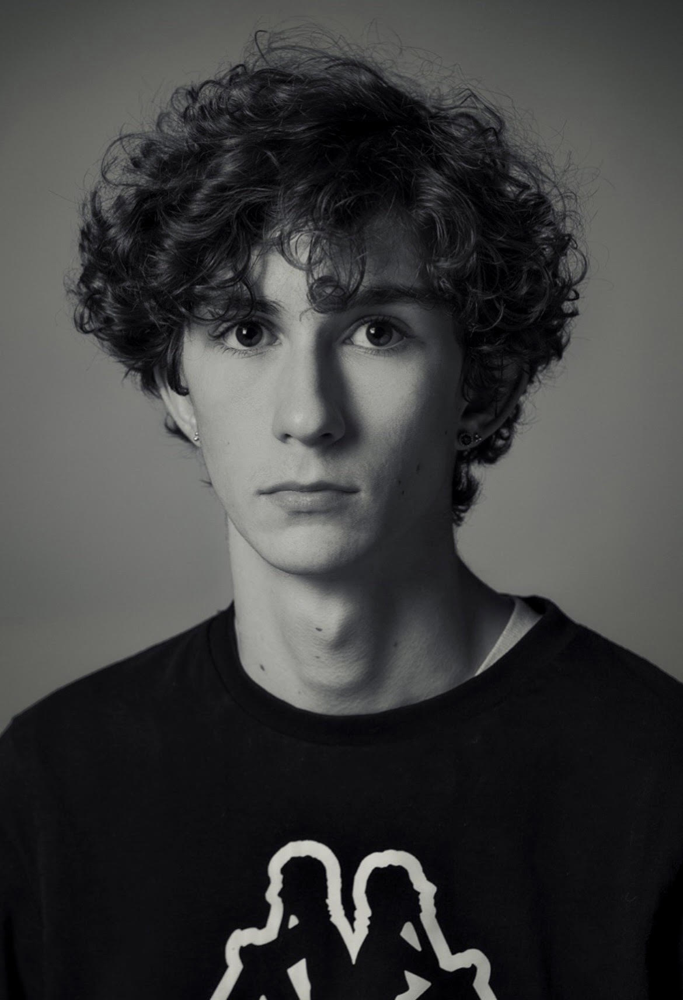

MARTIN DOKHOLYAN
Biochemistry & Molecular Biology major at Boston University.
Interested in the neural basis of behavior and active sensing.
üìç Allston, MA
üéì BMB @ BU 2026
Interested in the neural basis of behavior and active sensing.
üìç Allston, MA
üéì BMB @ BU 2026
Terminal Type
help for commands.
user>